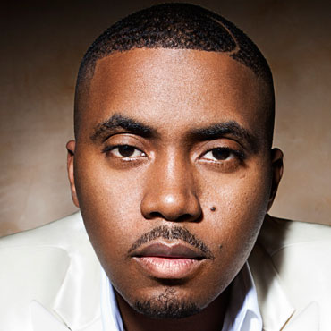
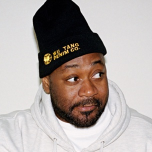
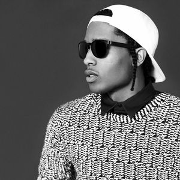

East Coast Hip-Hop is the oldest subgenre of hip-hop, dating back to the late 70's. The instrumental style that sets east coast hip-hop apart from other subgenres is boom-bap. This style became very popular in the 90's and has come back in recent years with the rise of Pro Era label. The majority of this music comes from New York City but other east coast cities have their own particular artists. Below are some artists that fit into the east coast hip-hop genre.
Nas

Nasir Jones AKA Nas is a rapper from New York City, New York. His rise to fame came in 1994 when he released his debut album Illmatic. Some have called this the greatest rap album of all time. He has eight albums that have reached platinum or greater status. He's most well known for making music about New York and life in New York. He's often listed as one of the greatest rappers of all time.
Ghostface Killah

Dennis Coles AKA Ghostface Killah is a rapper from New York City, New York. He is most well known for being a member of the rap group Wu-Tang Clan. He's gained mainstream in Wu-Tang Clan as well as in his solo career. He's known for his loud, fast-paced flow and his great storytelling ability.
A$AP Rocky

Rakim Mayers AKA A$AP Rocky is a rapper from Harlem, New York. He is a member of A$AP Mob based out of New York City. He's been one of the most successful rappers over the last few years with a lot of mainstream success. He is known for his laidback flow and aggressive delivery. He incorporates old school with new school in a lot of his production.